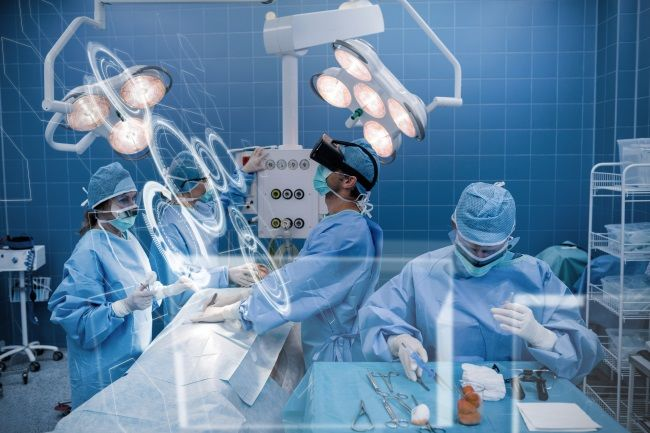

During COVID-19, doctors and nurses scrambled during the severe shortages internationally. Using VR, they have found ways to treat the virus. Universities have been accelerating graduates in the medical field to provide more doctors. They needed training, and VR came along to help. Simulations are run by authorities to train the incoming wave of students. Not only is this helpful in communication, but it also allows a refresh of experience to older doctors and nurses.
Source: https://www.cnn.com/2020/04/21/tech/vr-training-coronavirus/index.html
Black Box VR sparked a new interest in the technology community at CES 2018. Combining the concept of games with exercises, Black Box managed to release a virtual reality gym. Fitness now becomes something that not only improves one's wellbeing but also an addictive, fun, and thrilling experience.
Source : https://www.ces.tech/Exhibitors/Success-Stories/Black-Box-VR.aspx
Architecture, the practice of designing or constructing buildings, has been changing due to technology. Things have become more efficient thanks to a new innovation with Virtual Reality. Details are finer, scaling is easier, and projects involve better collaboration. Not only does this help people in the field, but also allows real estaters to sell building easier just by a click of a button virtually.

Source: https://vrcollab.com/blog/how-virtual-reality-vr-improves-architecture/